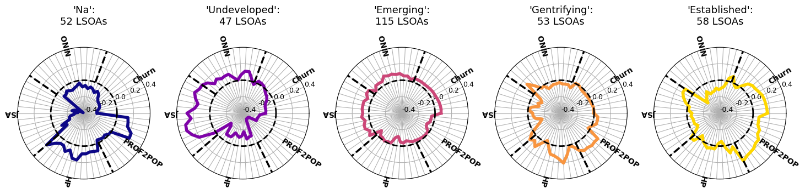

GIS Research UK 2025
Using Large Language Models to Predict Neighbourhood Change
Nick Malleson, Molly Asher, et al.
School of Geography, University of Leeds
These slides: www.nickmalleson.co.uk/presentations.html
This research is supported by UKRI (ESRC) funding ES/Y006259/1 under the Digital Footprints scheme
Code Availability
Project website: https://urban-analytics.github.io/INTEGRATE
GitHub repository: https://github.com/Urban-Analytics/INTEGRATE
Python code for this paper: https://github.com/Urban-Analytics/INTEGRATE/blob/main/llm/python/3-gentrification_airbnb-gisruk25.ipynb
Overview
INTEGRATE project
Context: can user-generated text data help us to understand neighbourhood change?
This paper: use a large-language model (LLM) to read neighbourhood and property descriptions on Airbnb to estimate the extent to which gentrification is occurring
Data
Inside Airbnb
Website / service that scrapes Airbnb listings data
2,644 property listings for Bristol accessed on 23 September 2024
Variables include:
description of the properly
neighbourhood_overview (sometimes)
N=1,495 listings have description and neighbourhood overview
Method
Download listings from Inside Airbnb
Prompt the LLM to read the text and estimate how 'suggestive' the descriptions are of gentrification
LLM outputs a number for each listing (and an 'explanation' for its score)
Analyse the gentrification scores...
LLM

Meta Llama 3.3 70B Instruct Turbo
Open source and publicly available
Modern (at the time of writing) and seems to work well for this task
(more on validation later though!)
Executed using (paid) servers provided by together.ai
Model too large to run locally
But to parse ~10,000 listings the cost is very cheap (only a few £s)
LLM prompt
You are an expert in urban studies with a deep understanding of gentrification and how it is discussed in public discourse. I will provide you with some Airbnb listings. Your task is to analyse their text and determine the extent to which they suggest that the neighbourhood or area referenced is experiencing gentrification. Specifically:
Read the listings closely and identify any words, phrases, or implications that might indicate signs of gentrification, such as mentions of new luxury developments, rising rents, displacement of long-time residents, upscale amenities (e.g., artisanal coffee shops, craft breweries), changing demographics, or neighbourhood ‘revitalisation’.
Consider both explicit and implicit cues. Explicit cues directly mention new businesses or rising prices, while implicit cues might reflect subtle neighbourhood changes.
Assign a score from 1 to 5, where 1 means not suggestive of gentrification and 5 means highly suggestive.
Explain your reasoning in 1-2 sentences, referencing the specific words or phrases in the tweet that led you to your conclusion.
Provide your answer strictly in the format ‘1. Score. Reasoning’, ‘2. Score. Reasoning’, ‘3. Score. Reasoning’, etc., without any additional explanation or commentary.
Preliminary Results
Stochasticity
The LLM is probabilistic: its output can vary randomly
To test this we run the estimation procedure 3 times with identical LLM parameters
Fleiss Kappa statistic well suited to estimate annotator variability where there are more than two annotators
Score = 0.74 suggests "substantial" agreement
Immediate future work (1)
Defining gentrification
Two problems:
Five point Likert scale is too simplistic
We are interested in 'emerging' gentrification, not in areas that have already gentrified
Next: New prompt and a more nuanced definition of gentrification
Undeveloped, Emerging, Gentrifying, Established

Immediate future work (2)
Validation
So many unknowns. What is the LLM classification actually telling us??
One approach: benchmark against the Greater Manchester Gentrification Index
Are the underlying demographics consistent with our estimates of gentrification?
Summary / Conclusions
We are interested in whether the analysis of text data can tell us something about neighbourhood change and/or gentrification
Use an open-source large language model to try to infer the status of gentrification processes in neighbourhoods
Results are intriguing, but need proper validation before any insight
GIS Research UK 2025
Using Large Language Models to Predict Neighbourhood Change
Nick Malleson, Molly Asher, et al.
School of Geography, University of Leeds
These slides: www.nickmalleson.co.uk/presentations.html
This research is supported by UKRI (ESRC) funding ES/Y006259/1 under the Digital Footprints scheme